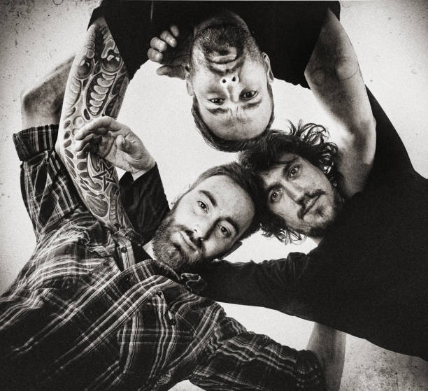

Aquella noche hubo disturbios y represión policial, ya que minutos antes de que empezara el show los organizadores no dejaron ingresar más gente al estadio, lo que generó la bronca de la multitud que se encontraba afuera con sus entradas. Además, permitieron el ingreso de la barra brava de Vélez al recital y reprimieron a la gente que tenía sus entradas pagas para el show. El saldo fue el asesinato de Rubén Carballo, además de 30 heridos y otros 40 detenidos. Lamentablemente, a los músicos no les comunicaron lo que sucedía fuera del estadio, por lo que fueron duramente criticados por la prensa que afirmó que “no se hicieron cargo de la muerte de Rubén Carballo”.
La historia de Viejas Locas comenzó en un recreo del Colegio Comercial Nº 2 de Villa Lugano cuando tres chicos empezaron con la idea de formar una bandita para pasar el tiempo. La primera formación de la banda fue Mauro Bonome en voz, Bachi en bajo y Diego Cantoni en guitarra. Todos pertenecían al barrio de Piedrabuena, situado entre Mataderos y Lugano. Con dicha formación empezaron a tocar covers de The Rolling Stones y Pink Floyd mientras, paralelamente, buscaban un baterista. En la búsqueda se toparon con Cristián “Pity” Álvarez, quien hacía seis meses se encontraba aprendiendo a tocar la guitarra y estaba interesado en algún grupo donde poder tocar. Cuando Pity se incorporó, sumó al músico que faltaba: Gastón Mansilla que tomó la posta en la batería. Viejas Locas a fines de los ’80s en Alcatraz, y gracias al boca en boca, lograron convocar a 60 personas. Ya comenzaba a destacarse la presencia escénica de Pity en vivo. Además de los covers, tocaron dos temas que ya eran de su autoría: “Descansar en paz” y “Buey”. Los tres fundadores de la banda comenzaron a perder el interés por el proyecto y al borde de la separación permanente siempre, Pity siguió adelante y fue incorporando otros músicos. Luego de varias pruebas infructuosas para conseguir un cantante, el propio Álvarez ocupó el micrófono principal y más tarde se sumaron Ezequiel “Peri” Rodríguez en armónica, Juancho Carbone en saxo y Adrián “Burbujas” Pérez en teclados. La popularidad de Viejas Locas creció gracias a ese boca a boca y a la creatividad nacida de un bajo presupuesto. Como las pintadas con aerosol y una nueva estrategia publicitaria, barata y efectiva: pegar calcos junto al timbre de los colectivos. Todavía hoy hay estampadas en los 155, 180 y 126 que salen de Mataderos: “Viejas Locas R n’R”. También planearon otras formas de atraer a más seguidores al grupo, entonces cargaban todos los domingos con sus equipos para actuar gratis en el Parque Centenario. Para 1993, tras haberse presentado varias veces en el desaparecido local La Cueva, los dueños los convocaron, junto a otras bandas, para que participaran de un compilado que se llamo “Una noche en La Cueva”. Los temas con los que participó Viejas Locas fueron: “Eva” (con una versión algo cambiada a la luego difundida) y “Tirado en la estación”. La movida fracasó para ellos porque firmaron un contrato y después estuvieron mucho tiempo para poder rescindirlo. Pese a aquellos problemas legales la banda siguió tocando y en 1994 grabaron el primer demo que fue distribuido, gratuitamente, en las presentaciones que realizaron en los shows de Die Schule, Mvseo Rock y New Order.
Finalmente “Especial” fue el tercer disco de Viejas Locas, que contó con la producción de Nigel Walker (otro prestigioso productor británico). Se editó en marzo del 19999 y resultó el mayor éxito comercial de la banda. El hit “Me gustas mucho” tuvo alta rotación en las radios porteñas. El álbum fue el que les permitió cruzar las fronteras y salir a tocar en países limítrofes. A mediados del 2000, Pity se retiró de la banda y realizaron un último recital en La Matanza, sin anunciar que era el final de Viejas Locas. “La separación de una banda es como pelearse con una chica con la que estuviste casado diez años: no la aguantás más, pero todavía tenés sentimientos hacia ella. Yo me fui de la banda”, declaró Álvarez al respecto. De esta disolución surgieron otras bandas: Intoxicados (con Pity y Abel Meyer) y Motor Loco (la banda de Fachi) fueron las principales, mientras que Juancho Carbone se sumó a Callejeros. En el año 2002 se lanzó un disco recopilación titulado “Sigue pegando – Grandes Éxitos”, que contiene los hits de Viejas Locas y un inédito: “El hombre suburbano”, con la participación de Pappo Napolitano en guitarras. Luego, a mediados de 2003, se editó el DVD “Viejas Locas”, que contenía un recital grabado en vivo en el estadio Obras ante 6 mil personas y seis videoclips del grupo. Tras varios años de la separación, en 2009 circuló el rumor de retorno de la banda, con una gira nacional y un nuevo disco, que fue confirmado en una conferencia de prensa en Puerto Madero. Esa vuelta se concretó la noche del sábado 14 de noviembre en el estadio de Vélez Sarsfield. La banda regresó sin la presencia de Sergio Toloza que fue reemplazado por Sergio “Peluca” Hernández (guitarrista de Motor Loco). Pity desmintió que Viejas Locas se disolvió por asperezas internas aunque reconoció que “si una novia te cansa, cinco más”. Finalmente, afirmaron que “volvieron para quedarse” y que realizarían una gira a nivel nacional que incluiría a muchas las provincias del país. El show operativo retorno se realizó un 14 de noviembre de 2009 en Vélez, dando inicio a la gira “Estamos llegando”. Esa noche la banda tocó ante 42 mil personas durante casi tres horas en las que repasó más de 30 canciones de sus álbumes grabados, además de presentar dos canciones nuevas: “Perro guardián” y “Roca & giro” (que en realidad habían quedado inéditos de la década de los ’90s). Aquella noche hubo disturbios y represión policial, ya que minutos antes de que empezara el show los organizadores no dejaron ingresar más gente al estadio, lo que generó la bronca de la multitud que se encontraba afuera con sus entradas. Además, permitieron el ingreso de la barra brava de Vélez al recital y reprimieron a la gente que tenía sus entradas pagas para el show. El saldo fue el asesinato de Rubén Carballo, además de 30 heridos y otros 40 detenidos. Lamentablemente, a los músicos no les comunicaron lo que sucedía fuera del estadio, por lo que fueron duramente criticados por la prensa que afirmó que “no se hicieron cargo de la muerte de Rubén Carballo”. La banda misma confirmó que en el momento no sabían qué estaba pasando, y cuando se enteraron acompañaron en sus últimos días de vida a Rubén y a su familia, porque que la empresa encargada de la seguridad del show no corrió con los gasto de nada, e inclusive tuvieron que obligarlos a pagar el sepelio del joven (como una mínima actitud de respeto ante lo que había pasado). El año 2010 encontró a Viejas Locas realizando una gira por el interior del país, presentándose en lugares como Cosquín Rock (donde realizaron dos fechas seguidas suplantando a Callejeros en una de ellas), Comodoro Rivadavia (en el festival Comodoro Rock 2010), Rosario, Ciudad Oculta (presentándose en una villa miseria), Córdoba, Bahía Blanca, Mendoza y Neuquén. La intención era cerrar la gira con una fecha doble en el estadio Malvinas Argentinas de de Buenos Aires, pero debido a los incidentes ocurridos en Vélez, las fechas (luego de ser pospuestas varias veces) no pudieron llevarse a cabo. En abril del año 2011 comenzaron a surgir rumores de que la banda entraría a grabar un nuevo disco después de 12 años de ausencia en un estudio. Aunque primero la fecha de lanzamiento se anunciaba para agosto del mismo año, el cuarto trabajo discográfico de Viejas Locas, “Contra la pared”, salió a la venta el 24 de noviembre de 2011. Cinco días después de una presentación en la ciudad de Barranqueras (Chaco) ante 3 mil personas (donde se adelantaron algunas canciones del disco) el nuevo trabajo discográfico de la banda salió a la luz con 13 canciones, de las cuales sólo cinco fueron estreno. El resto: inéditos de las primeras épocas de la banda. Debido a problemas internos, Abel Meyer abandonó su lugar de baterista y fue reemplazado por Alejandro “Mono” Avellaneda (ex Dancing Mood, segunda batería de Intoxicados y percusionista en la nueva etapa de Viejas Locas). Abel, en diversas ocasiones en los recitales del tour “Estamos llegando” se alejaba de los escenarios para volver en algunas canciones solamente, y en los últimos tiempos directamente ni viajaba. Aunque no fueron aclarados por la banda los motivos del alejamiento, Fachi mencionó que se fue por problemas que venían teniendo con Pity desde la época de Intoxicados. En el 2012 la banda encaró una gira presentándose en todo el país, empezando por el Cosquín Rock (nuevamente después de dos años), pasando por San Juan, Mendoza, Córdboa, Corrientes, Santa Cruz, Santiago del Estero y Chubut. Durante la fecha de Baradero (antes de que la banda saliera a tocar), las personas que se encontraban en el lugar escucharon rumores de que Pity no iba a presentarse, lo que generó un gran descontento. La situación se desbordó y algunos subieron al escenario para destrozar y robar instrumentos. Todo desembocó en disturbios generados en el anfiteatro donde se iba a realizar el recital. A la siguiente semana, Viejas Locas se presentó en la ciudad de Tandil. En ese recital se pudo ver por última vez a Fabián “Fachi” Crea y a Sergio “Peluca” Hernández tocar con el grupo, ya que unas semanas más tarde anunciaron su alejamiento de la banda. El 2013 trae grandes cambios para Viejas Locas. En el mes de enero Pity anunció, en una entrevista, que para fines de mes saldría el videoclip de la canción “Frasco vacío” (la cual cierra el disco “Contra la pared”). Además, también confirmó (para tristeza de los seguidores) que “Fachi” y “Peluca” se alejaban de la banda.También se alejó el saxofonista Eduardo Introcaso: estuvo presente por última vez en el Cosquín Rock 2013. Fachi negó discusiones o problemas con otros integrantes de la banda, como habían divulgado algunos medios. Además aclaró que su alejamiento se dio al sugerir que la banda debía “parar un poco” por situaciones que no podían manejar, pero como su idea no fue consensuada decidió dar un paso al costado. Pity siguió adelante: el lugar de Fachi fue ocupado por Gabriel Prajsnar, bajista de la banda Gente Extraña; y en el lugar de Peluca ingresó un guitarrista llamado Juan, que declaró: “no me va usar mi apellido”.